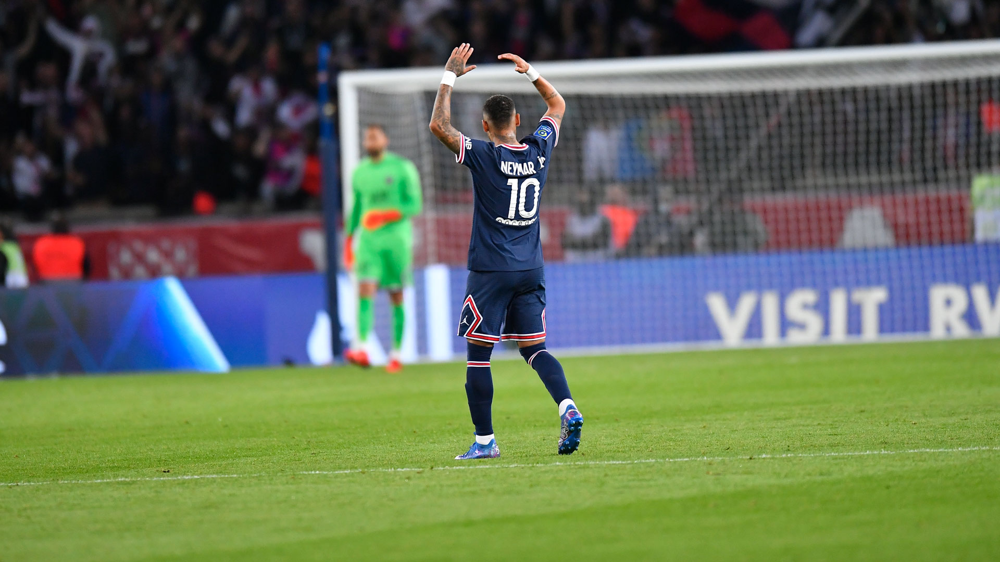
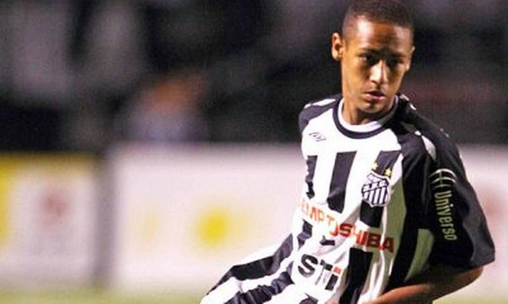

O caos perfeito de Neymar Júnior

Neymar tinha grande habilidade com a bola nos pés desde sua infância. O menino iniciou sua carreira nas categorias
de base da Portuguesa Santista em 1998, sendo transferido para o Santos em
2003, quando tinha apenas onze anos.

O dia 7 de março de 2009, o jogador com 17 anos disputava a primeira
partida como profissional com a camisa do Santos.